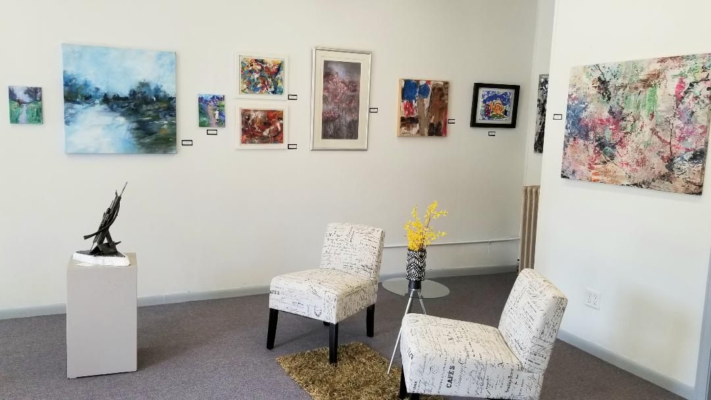

Last year, local artist Brenda Singletary took a look around the Adrian area and had an epiphany.
“There were a lot of programs for children, and programs for kids in school, but there weren’t a lot of things available for seniors, especially with a limited income,” said Singletary, 65.
Rather than allowing the observation to fade from her mind, Singletary took action, setting up a series of art classes for senior citizens.
Singletary had the qualifications to be an art instructor, having spent a year teaching at the College for Creative Studies in Detroit. She already had the facility she would need, as well: the back room of The Art Factory, her Downtown Adrian art studio. And as for cost-effective supplies? Hobby Lobby was always there, as were the local thrift stores.
Just like that, everything fell into place. Singletary held her first set of classes for seniors last fall — and participation was free.
“Most seniors have a fixed income,” Singletary explained. “And a lot of the classes can be pretty pricey. And for the ones who really want the classes and could not afford them, I want to make sure that they had an option.”
The art classes primarily entailed drawing and various forms of painting, with students working with texture on canvas, on paper with pastels and with watercolors.
“We might do art skins, and that's putting paint — acrylic paint, when it dries — pull it up and put it on something else,” Singletary said. “We might paint on plastic with acrylic, then we take the plastic sheets that are recycled from plastic bags, and we might make lamp covers with them, or just different things like that … to let them know what they can do with just a little bit of training, what they can accomplish. We try to inspire them, and just… make them aware of the art that’s all around them by just doing the simple things that they can adapt and take home — put on the wall — and just be proud to say they’ve done this themselves.”
Sharon Fry, a 76-year-old retiree and Adrian resident, spoke highly about her experience as a student in Singletary’s fall classes.
“I love going to the gallery and just being with the other ladies,” Fry said. “It's just enriched and broadened my life. … I've been really, really happy with the whole thing, and … it's just something that I tremendously enjoy that I had never done before.”
According to Fry, Singletary’s unique personality was key to her enjoyment of the experience.
“She just sounded so bright and cheery and inspiring on the phone when I talked to her … I found out that she was every bit as bright and cheery and inspiring as she sounded on the phone when I went to the first class,” Fry said of Singletary. “You know, everybody's busy, and everybody's stressed ... but ... even when she's stressed about something, she's so encouraging.”
Singletary’s support enabled Fry to discover the joy of creativity, Fry said.
“It’s just so much fun, because the rules are do what you like, and do the best you can and use anything you want,” Fry explained. “It’s not fine art, but it sure is fun art!”
Singletary characterizes herself as an “interdisciplinary” artist, using different materials and working with different processes to explore different modes of self-expression.
Singletary was born and raised in Detroit, and became interested in art as a child.
“My father, on Sunday mornings, before we went to Sunday school, he would pull out the Sunday paper — that’s when they had the ‘funnies,’ they called them, y’know, the comics — and he would imitate certain characters … and he would sit at the table and just draw them,” Singletary said. “I would imitate him, and I realized that I could do it better than my three sisters could do it.”
Seeing this talent, her grade school art teacher put her in a special art program in Detroit, which further cultivated her passion for the craft.
Singletary went on to receive a Bachelor of Arts from Morris Brown College in Atlanta and a Master of Fine Arts in Interdisciplinary Arts from Goddard College in Plainfield, Vermont. She lived in the Atlanta area for over 40 years. Originally, she worked in television broadcasting, but when she found herself losing interest in the occupation, she decided to forge a career in art.
The artworks that resulted, according to Singletary’s website, “are included in museums, art galleries, college/universities, and corporations such as AT&T, Ford Foundation, McDonald’s Inc., Fox Television, Marriott, Kaiser-Permanente and many private collections.”
In 2007, she was profiled by The HistoryMakers, a nonprofit educational institution that prides itself as “the single largest collection of African American first-person video oral history testimony in the world.”
“Collectors of Singletary’s work include Andrew Young, Hank Aaron, Terry McMillan, Thurbert Baker and Marion Wright Edelman,” reads the biography that The HistoryMakers prepared on Singletary. “She has been presented with the American Express Cultural Arts Award, the Golden Sable Award from the United Negro College Fund, and the Daimler-Chrysler Motion through Expression Art Competition Award.”
When Singletary’s father fell ill a few years ago, she moved back to Michigan to support him. Once here, she reconnected with a former classmate, Town Money Saver publisher Mike Johnson. They married in 2017, and now live in Adrian, where Singletary’s artwork and community service are appreciated by local residents.
“I think she has a real vibrancy about her — a vitality about her — that really encourages people to be creative,” said Suzanne Schreiber, who coordinates the local INAI Gallery as a ministry of the Adrian Dominican Sisters. “She's teaching senior citizens and bringing out the creativity in these senior citizens who are looking for a place to go and to be in a place with other people. … I think when you get together with others and do art, it kind of generates your own creativity.”
